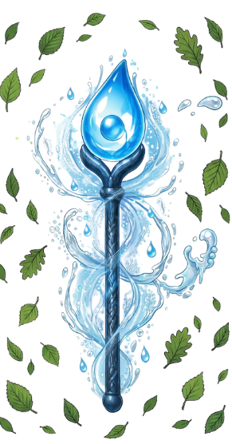

🔎 ¡Detectives, atentos!
En cada lugar hay una huella escondida. Lee la pista y observa cuidadosamente la situación.
Si encuentras un descuido que desperdicia o contamina el agua, escribe: verti
Si encuentras una acción que protege y cuida el agua, escribe: guardian
🏆 ¡Felicitaciones, Guardián Detective!
🎉 ¡Misión cumplida! Has logrado encontrar todas las huellas de Verti y reconocer las acciones que ayudan a cuidar el agua.
🔎 Gracias a tu atención y tus decisiones, Verti se ha debilitado una vez más.
💧 Has demostrado que sabes reconocer los descuidos que pueden desperdiciar o contaminar el agua y también las acciones que ayudan a protegerla.
🌟 ¡Ganaste tu insignia de GUARDIÁN DETECTIVE! 🕵️♂️💧
Recuerda: un verdadero Guardián está atento todos los días, en la escuela, en la casa y en el campo. Cada vez que cuidas el agua, ayudas a que Verti tenga menos espacio para crecer.
¡Sigue atento, Guardián Detective! Tu misión continúa. 💙
